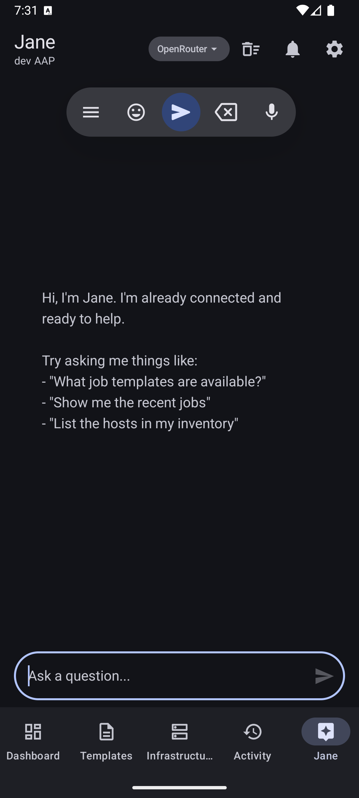
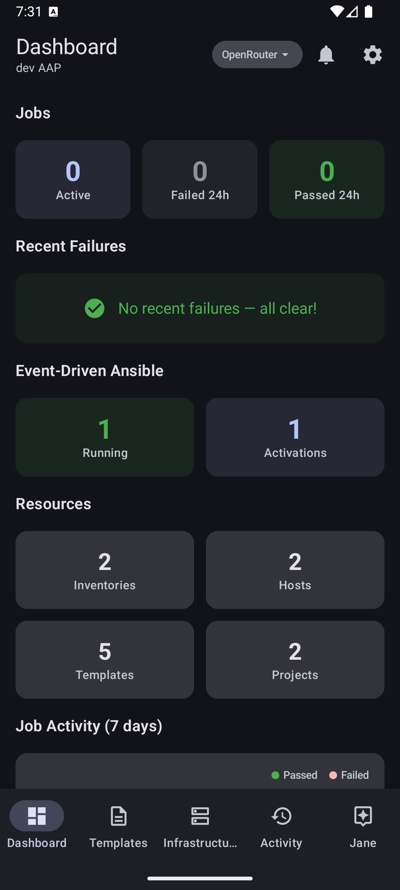
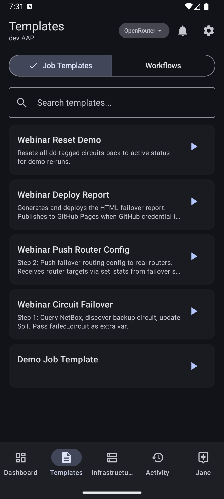
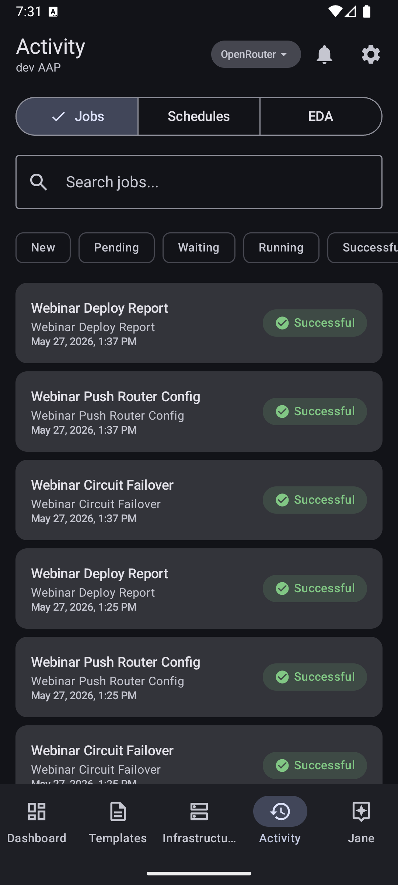
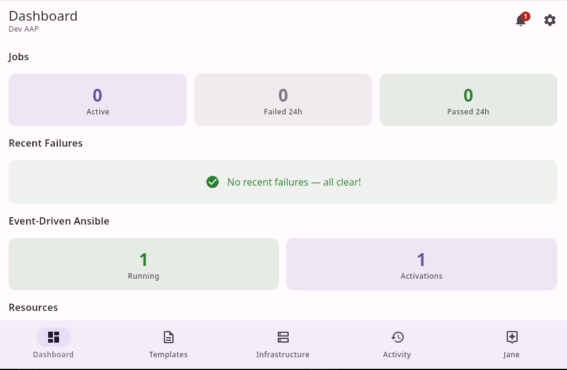
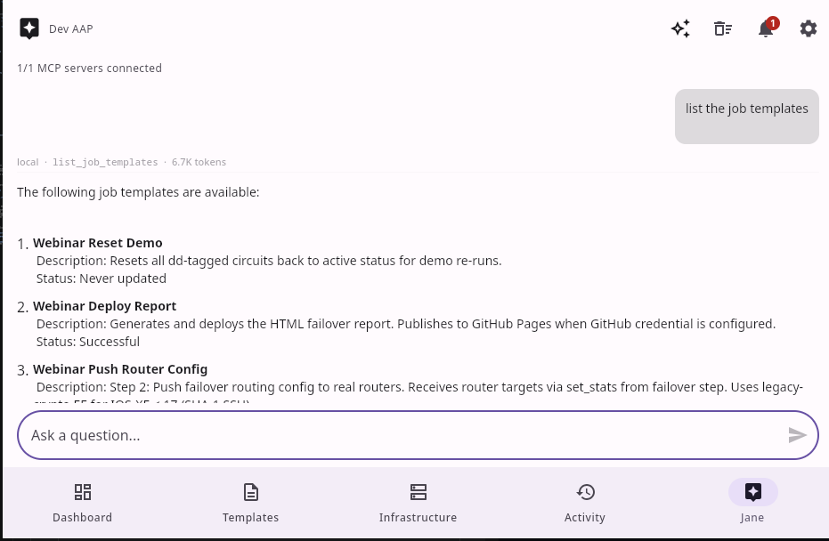
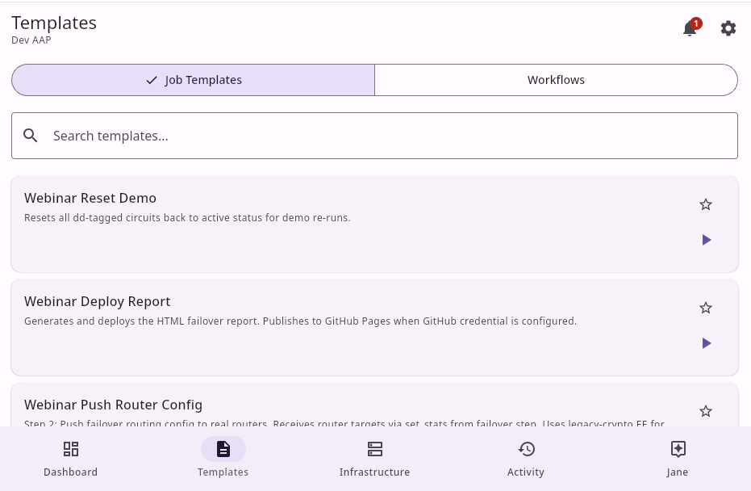

Meet Jane
She lives in the network between you and your Ansible Automation Platform. Launch jobs, watch workflows, manage inventories, and ask her anything — across any distance.
Automation in your pocket
Material You design. Adapts to your system.




Same app, bigger screen
Native desktop builds for Linux, macOS, and Windows. No emulation, no Electron.



Linux · macOS · Windows
The Network
Talk to Jane
An AI assistant that speaks Ansible. Ask her to list failing jobs, check host facts, launch a template, or explain what went wrong on your Ansible Automation Platform. She talks to your platform through MCP and 61 local tools, then reports back in plain language.
Launch Jobs
Browse job templates on your Ansible Automation Platform, launch playbooks with parameters, and approve or deny workflow steps without opening a laptop.
Monitor Everything
Watch jobs run in real time. See stdout, status, and timing for every job. Full read-only mode available for safe browsing of your platform without risk of changes.
MCP Tools
Jane auto-discovers your Ansible Automation Platform's MCP endpoints on connect. Add custom MCP servers for knowledge bases, monitoring, or any tool that speaks the protocol.
Infrastructure at a Glance
Browse inventories, inspect hosts and facts, check groups. 61 local tools cover jobs, inventories, credentials, projects, schedules, EDA, and platform config on your Ansible Automation Platform.
Event-Driven Ansible
Monitor EDA activations and rulebooks. See what's triggering your event-driven automation on your Ansible Automation Platform without switching to a desktop.
Secure by Default
Tokens encrypted with AES-256-GCM. Android Keystore or PKCS12 backing. HTTPS-only. No data on third-party servers. Connect to multiple Ansible Automation Platform instances from one app.
Begin Transmission
Free, open source, no accounts required.
Requires Android 12+ or Desktop with JDK 17+. Ansible Automation Platform 2.5+.